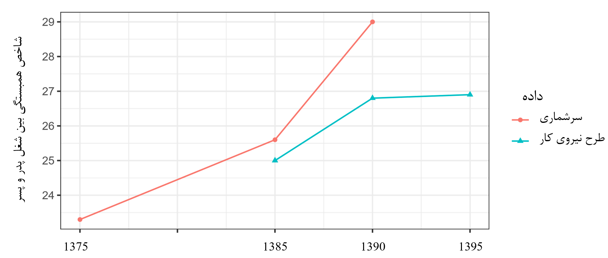
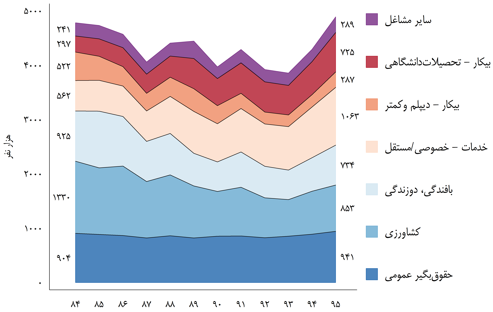
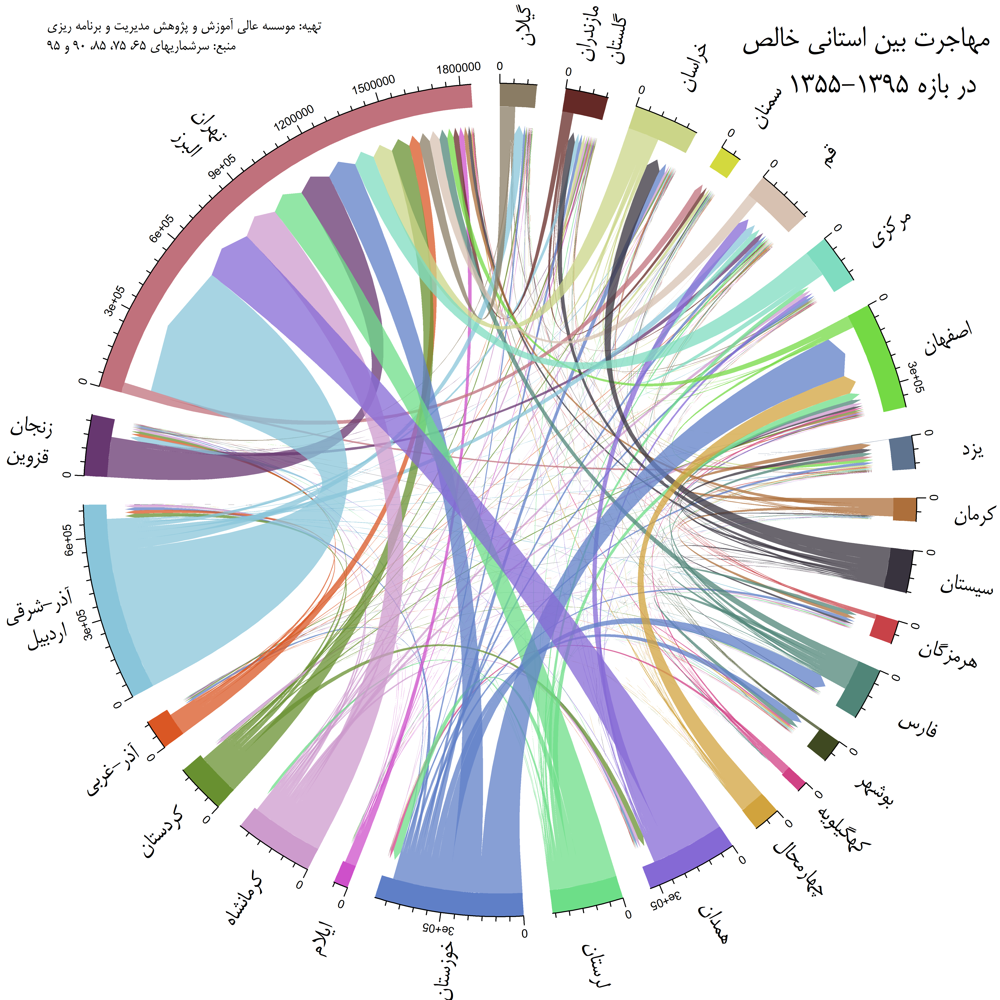
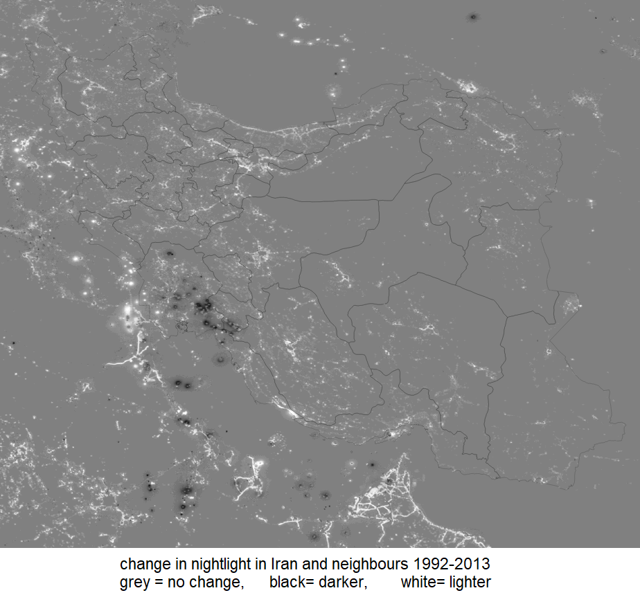

| پژوهشها و مقالات فارسی |
|---|
بررسی تغییرات تحرک شغلی بین نسلی مردان در ایران با استفاده از روش لانگ و فری (۲۰۱۳) و فاصله آلثام بین ماتریس های تغییر وضعیت در سال های مختلف حاکی از کاهش ملایم تحرک شغلی در بازه ۱۳۷۵-۱۳۸۵، سپس کاهش شدیدتر آن در بازه ۱۳۸۵-۱۳۹۰ است. طی ۱۳۹۰ تا ۱۳۹۵ تحرک شغلی تغییر معنی داری نداشته است. این روند با عرضه ثابت مشاغل بخش عمومی، افزایش تعداد دانشجویان، و پدیده مقطعی رشد بدون اشتغال در کشور همبستگی دارد و این سه عامل می توانند به طور بالقوه این تغییرات را توضیح دهند

زنان شاغل ایرانی به چهار دسته اصلی تفکیک می شوند: ۱- شاغلان رسمیِ بخش عمومی و اغلب در آموزش و سلامت، ۲- کارکنان خانوادگی بخش کشاورزی، ۳- بافندگان فرش و دوزندگان لباس، ۴- شاغلان بخش خدمات به صورت حقوق بگیر خصوصی و یا کارکن مستقل. سطح تحصیلات زنان شاغل در دسته اول و چهارم بیشتر از دوم و سوم است. در سال های اخیر از تعداد شاغلان دسته ۲و ۳ کاسته شده اما جمعیت فعال و شاغلان دسته ۴ افزایش یافته است. در حال حاضر پیش بینی می شود که افزایش نرخ مشارکت زنان در فصول آتی ادامه دار شود، اما در صورتی که چاره ای برای خیل زنان بیکار اندیشیده نشود، تهدید خروج دائمی آنها از بازار کار و بلا استفاده ماندن سرمایه انسانی شان وجود دارد



چابکسازی در بازارکار دنیای اقتصاد ۱۳۹۶/۱۲/۲۶
بار ابرچالشها روی دوش فقرا تجارت فردا شماره ۲۶۲
بررسی شاخص فلاکت در استانها تجارت فردا شماره ۳۱۶
از «توزیع» تا «بازتوزیع» تجارت فردا شماره ۳۱۹
نیات خوب، نتایج بد تجارت فردا شماره ۳۲۵